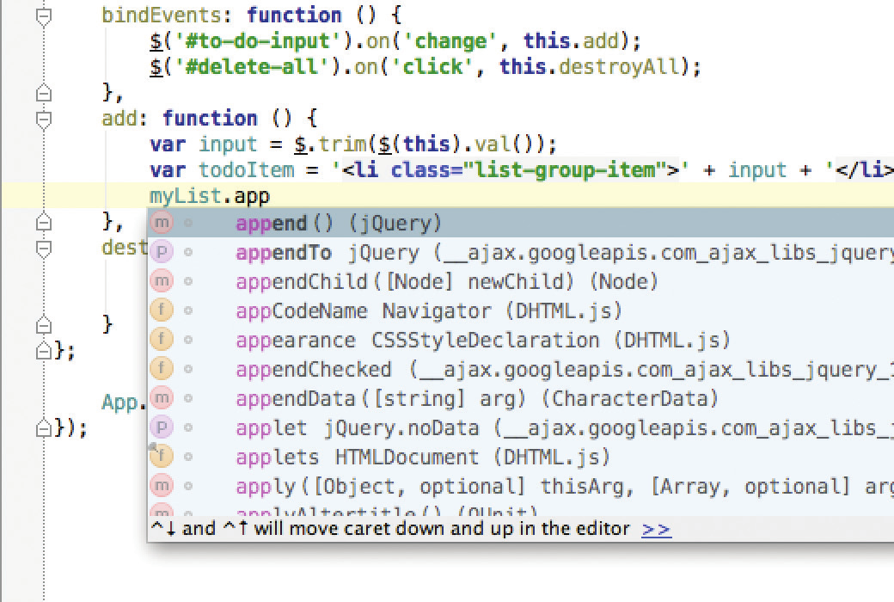
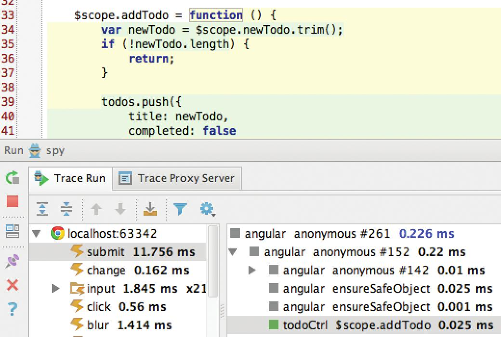

WebStorm feature a smart editor for JavaScript, HTML and CSS that truly understands your code and its structure and offers full coding assistance, essential for error-free development:
- Intelligent code completion
- Syntax highlighting
- Auto-indentation and code formatting
- Live templates
- Support for language mixtures
- Multiple carets and selections

WebStorm follows the latest trends in web development and provides the best experience with a wide range of technologies:
- Coding assistance for CSS preprocessor (LESS, Sass, Stylus), TypeScript, CoffeeScript and Dart
- Smart completion for Node.js
- High-speed coding with Emmet and Jade templates
- Advanced support for AngularJS, React and Meteor
- Integration with PhoneGap, Cordova and Ionic
Save your time with powerful code navigation and refactorings in WebStorm
- Advanced safe refactorings for JavaScript, HTML, CSS and other languages: Rename, Safe Delete, Wrap with tag, Extract variable, parameter or method and more
- Quick navigation: Go to function or variable declaration, Go to symbol, class or file, Find/Highlight usages and more
Live Edit allows you to see page content updates in the browser automatically, without reloading, with your changes in HTML and CSS. Take your productivity up to the next level with an amazing set of tools that WebStorm provides:
- Built-in Terminal
- Integrated Node.js package manager npm
- ABuilt-in REST Client for testing REST API
- Integrated Grunt task runner and Gulp build tool
- Spy-js, a powerful JavaScript tracing and profiling tool

WebStorm provides wide opportunities for easy, yet powerful debugging and testing of your code in the IDE:
- JavaScript debugging based on Chrome or Firefox: customizable breakpoints in HTML and JavaScript, advanced variable view, frames and watchers
- Debugging of Node.js applications
- Full-featured debugging of CoffeeScript, TypeScript, Dart or minified JS with the help of source maps
- Integration with Karma test runner and Mocha for unit testing
WebStorm provides intelligent code quality analysis to identify and fix issues before you open the browser:
- On-the-fly error detection and quick-fix options
- Dozens of language specific code inspections
- Code validation tools and integration of JSLint, JSHint, ESLint, JSCS and Google Closure Linter

| Commercial License | Personal License | Classroom License | Open Sourse Project License |
|---|---|---|---|
| For companies and organizations | For individual developers | For educational institutions and trainers | For open sourse pro |
WebStorm license is permanent and includes one year of free product upgrades
since the purchase date, including even major version upgrades

Using WebStorm again on my Mac. Wowww, this is by far the best text editor I’ve used on a Mac to date. Forgot how good it was for JS.
@DaveVoylesDeclaring @WebStormIDE the best IDE for JavaScript development out there. Nothing comes close and worth every penny
@AshBlueWDDawnload your free 30-day trial at
jetbrains.com/webstorm
@WebStormIDE
blog.jetbrains.com/webstorm